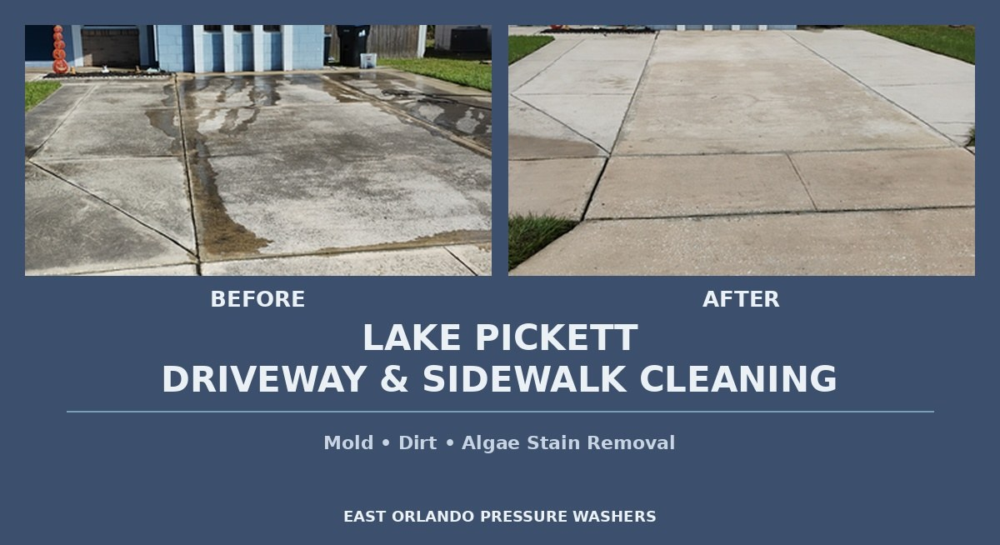

Your Local Pressure Washing Experts
Driveways, walkways, pavers and house washing for Lake Pickett homeowners — from the Lake Pickett Road corridor out to the lakeside estates
Lake Pickett is a different kind of East Orlando neighbourhood. Lots out here are frequently half an acre to an acre or more, which means long driveways, wide walkways and large screened lanais — considerably more hard surface to keep clean than a typical subdivision lot. Concrete and pavers don't stay clean on their own in Central Florida, and the bigger the driveway, the more obvious it is when they don't.
The setting is part of the problem. A 762-acre lake, a mature tree canopy and a rainy season that runs for months give mold and black algae exactly what they need, and shade is where that staining starts first — along the edges of a driveway, under the oaks, and anywhere water sits after a storm. Properties closer to the Hal Scott Preserve side of the corridor tend to sit in heavier shade and collect more organic debris than a newer subdivision off Alafaya. Some of the larger lots here also run on well water, where irrigation overspray can leave rust-coloured staining on concrete and stucco that a garden hose will never touch.
We clean concrete, brick pavers, vinyl and wood fences, pool decks, screen enclosures and house exteriors — and we adjust the method to the surface, so pavers don't get stripped and stucco doesn't get blasted.

Mold, dirt and algae staining removed from the concrete driveway and sidewalks.
Lake Pickett, East Orlando · Driveway & Sidewalk Cleaning · November 2026
We're based in East Orlando, so Lake Pickett is a short drive for us — fast response, no travel fees.
Driveways out here are a mix of poured concrete and brick pavers. We vary pressure, nozzle and cleaning solution by surface so pavers keep their joint sand and new concrete isn't etched.
Your property is protected with our full licensing and insurance coverage.
5.0★ rating from 20+ verified reviews from homeowners just like you.
"Friendly. Fast. And most importantly does a great job. Will use again and again."
Lake Pickett, East Orlando💬 Owner Response: Thank you, Jason! We're glad you're happy with the back patio cleaning at your home near Lake Pickett in East Orlando. Friendly, fast service with great results is exactly what we aim for. We truly appreciate your support and look forward to helping you again anytime!
We work right across East Orlando and the surrounding communities: Avalon Park, Cypress Springs, Waterford Lakes, Oviedo, Winter Park, plus Fieldstream, Stoneybrook East and Wedgefield.